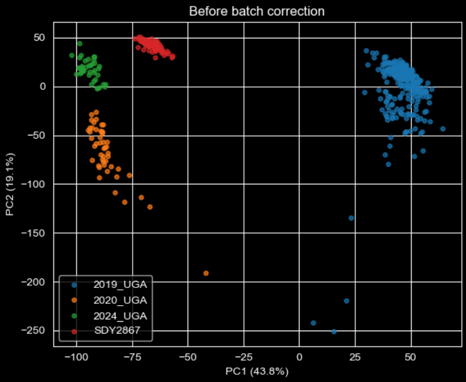
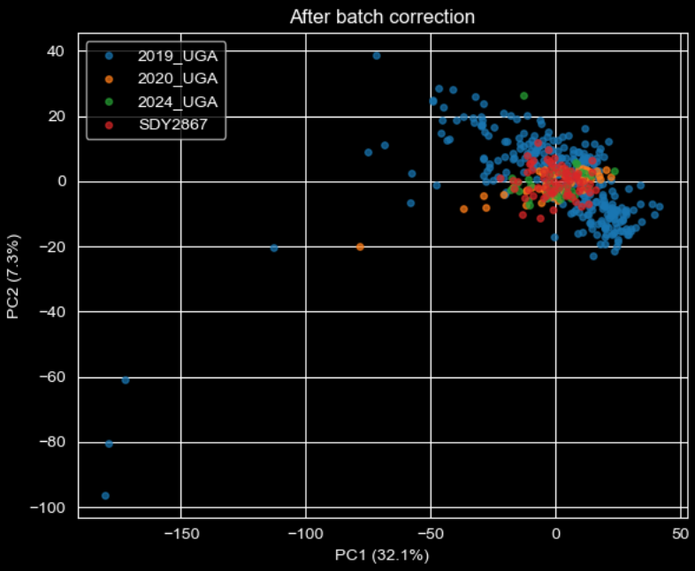

THE PROBLEM & DATA
Background & Motivation
Seasonal influenza causes 3–5 million severe cases annually. Unlike vaccines that provide durable, lifelong protection, flu shots offer incomplete, short-lived protection that varies widely between individuals based on age, genetics, and prior exposure. This creates a critical gap: the inability to accurately predict how a specific individual will respond to vaccination over time. The CMI-Flu Challenge pushes toward solving this with standardized, multi-omic data.
The Dataset
- CMI-Flu Prediction Challenge (NIH-funded, ~11 GB) with 3,960 participants across multiple influenza vaccine studies
- HAI serology: 128,177 antibody titer measurements, 65+ influenza strains, 3 timepoints (Day 0, 28, 365)
- Transcriptomics (RNA-seq): ~78M gene expression rows across 4 cohorts (2019_UGA: 30.5M, SDY2867: 21.1M, SDY2941: 20.3M, 2020_UGA: 5.8M)
- Flow cytometry: 213,624 immune cell subset measurements
- BCR sequences: 252,479 antibody sequences
- All data linked by
participant_idacross assay types and timepoints
Prediction Tasks
| Task | Prediction Target (Day 28) |
|---|---|
| 4.1 | H1N1 A/Victoria/4897/2022 HAI titer magnitude |
| 4.2 | H3N2 A/Massachusetts/18/2022 HAI titer magnitude |
| 4.3 | B/Victoria B/Austria/1359417/2021 HAI titer magnitude |
| 4.4 | Geometric mean magnitude across Tasks 4.1, 4.2, and 4.3 |
| 4.5 | Antibody breadth: geomean HAI across all variants |
| 4.6 | Antibody breadth: % of variants with HAI ≥ 40 |
Key Data Hurdles
- Challenge-set alignment: BCR sequencing and microarray data (16M+ rows) entirely absent from the challenge set, making them unusable despite potential biological value
- Missing target strain: Task 4.2's H3N2 A/Massachusetts/18/2022 did not appear anywhere in the training data, requiring a proxy target strategy
- Gene ID inconsistency: Measured gene sets differed between transcriptomics cohorts; only the intersection of genes present across all studies could be used
- HAI gaps: SDY2941 participants had no corresponding HAI measurements at all, preventing direct transcriptomics-to-antibody linkage for that cohort
- High sparsity: 83,000+ flow cytometry columns dropped for >80% missingness; many HAI strain-timepoint combinations missing for large participant subsets
Built with React + TypeScript; explores 3,757 participants, 65+ flu strains, and three timepoints entirely in the browser. Features HAI titer distributions, strain correlation heatmaps, a participant deep-dive radar chart, and an AI-powered natural language query interface with no backend required.
METHODS / PIPELINE
Data Preprocessing
- Pivoted HAI + transcriptomics from long format to wide format, with one row per participant and columns named HAI_<strain>_d<day> and TRAN_<gene>_d<day>
- Log₂-transformed HAI titers (dilution-based, right-skewed); binary-encoded sex and arm; standard-scaled age
- Folded day-30 cohort into day-28 (group means matched), recovering ~470 additional training rows
- ComBat batch correction across 4 transcriptomics cohorts to strip study-specific technical variation
- PCA compressed transcriptomics from tens of thousands of gene features into 290 principal components capturing 95% of variance
- Dropped columns with >50–90% missingness, any feature absent from the challenge set, and all Day 28/365 columns to prevent target leakage


Feature Engineering
- Proxy target (Task 4.2): Row-mean of all H3N2 Day 28 titers used as a stand-in for the missing A/Massachusetts/18/2022 strain; H3N2 strains are highly correlated (CV Spearman = 0.816)
- Delta features (Task 4.5): breadth_delta = geomean_d28 − geomean_d0, modeling the vaccine-induced rise rather than absolute titer and then adding the predicted delta back to each participant's Day 0 baseline for the final prediction
- Aggregate targets: Geometric mean across 3 strains (Task 4.4); seroprotection fraction ≥ 40 across all variants (Task 4.6)
- Cross-task transfer: Task 4.5 model reused for Tasks 4.1, 4.2, 4.4 by anchoring predictions to each participant's strain-specific Day 0 titer and adding the predicted breadth delta
Modeling Architecture
- All 6 tasks framed as regression problems; Spearman rank correlation used as the primary evaluation metric
- Baseline: Linear Regression on demographics + Day 0 titers to establish a performance floor
- H2O AutoML: up to 62 models per task (GBM, XGBoost, Deep Learning, DRF, GLM) → automatically combined into Stacked Ensembles
- 5-fold cross-validation with holdout predictions to mirror Kaggle's official ranking criterion
- Training set sizes ranged from 920 participants (Task 4.3) to 3,705 (Task 4.6), directly impacting model confidence
KEY INSIGHTS
Day 0 titers are the dominant predictor. A participant's pre-vaccination HAI titer outweighed every other feature, often by an order of magnitude, across all tasks. This confirms that immune memory at the time of vaccination is the strongest available signal.
One model can serve many tasks. The Task 4.5 breadth model (1,282 participants) was repurposed for Tasks 4.1, 4.2, and indirectly 4.4 by adding its predicted rise to each participant's Day 0 titer, outperforming individually trained models when task-specific data was sparse.
Age drives breadth of response. For Task 4.5, participant age was the single strongest feature, outweighing all HAI titers and transcriptomics PCs. This suggests age shapes not just how strongly, but how broadly, a person responds across strains.
Cross-strain immune responses are correlated. Participants who respond broadly also tend to respond strongly to individual strains, pointing to a general immune-responsiveness trait that transcends specific viral targets.
Transcriptomics add signal when present. After ComBat correction and PCA, Day 7 transcriptomic PCs (notably TRAN_PC115 and TRAN_PC61) consistently ranked in the top features for Task 4.5, boosting the final submission score by 9%.
Batch correction was essential. Transcriptomics data came from four separate cohorts each with strong technical batch effects. Without ComBat, cohort identity rather than biology would have driven those features.
Proxy targeting requires calibration. Task 4.2's H3N2 proxy achieved the highest CV Spearman (0.816) yet the lowest competition score, showing that cross-strain proxies work in-distribution but may not generalize perfectly to held-out challenge data.
Biological sex has marginal value. Sex appeared in the top 15 features for Task 4.5, but with far lower importance than age or HAI titers, suggesting its effect on antibody breadth is modest and secondary.
RESULTS
Per-Task Cross-Validation Results
| Task | Target | Training Participants | CV Spearman |
|---|---|---|---|
| 4.2 | H3N2 magnitude (proxy) | ~1,100 | 0.816 |
| 4.6 | Breadth ≥ HAI 40 | 3,705 | 0.773 |
| 4.5 | Breadth geomean | 1,282 | 0.754 |
| 4.3 | Vic B magnitude | 920 | 0.721 |
| 4.1 | H1N1 magnitude | ~300 | 0.348 |
| 4.4 | Geomean 3 strains | N/A | Derived* |
*Task 4.4 derived as geometric mean of Tasks 4.1, 4.2, and 4.3 predictions; no separate model was trained.
Conclusion
We built a machine learning pipeline to predict how individual patients respond to influenza vaccination using immunological and demographic data from the CMI-Flu Challenge. By combining batch correction, dimensionality reduction, and automated ensemble modeling, we outperformed a demographic baseline across all six prediction tasks.
Our key finding was that a person's pre-existing antibody levels at vaccination time are the strongest predictor of their response, with age playing an important secondary role. We also showed that a single well-trained model can generalize across related tasks, and that transcriptomic data adds meaningful predictive signal when available. Together, these insights suggest that personalized vaccine response prediction is achievable with the right combination of biological data and machine learning. This work lays a computational foundation that could help clinicians identify individuals most likely to benefit from revaccination or adjusted dosing strategies. The pipeline and findings were delivered to the CMI-Flu challenge organizers to support future research in precision immunology.